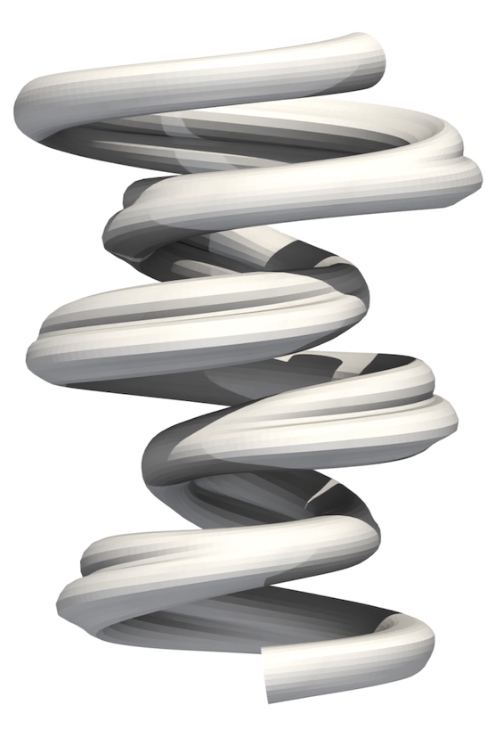
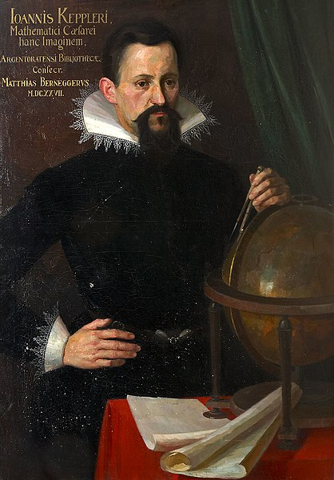

This post is a modified version of the opening to the background of my PhD thesis.
It was published the day after Geoffrey Hinton and John Hopfield were awarded the Nobel Prize in Physics, and the day that David Baker and Demis Hassabis were awarded the Nobel Prize in Chemistry.
There is yet one leverage point that is even higher than changing a paradigm. That is to keep oneself unattached in the arena of paradigms, to stay flexible, to realize that no paradigm is “true”, that every one, including the one that sweetly shapes your own worldview, is a tremendously limited understanding of an immense and amazing universe that is far beyond human comprehension. - Donella Meadows from her book Thinking in Systems: A Primer.
This is a personal manifesto for discovery, and an attempt to contextualise modelling, optimisation, and the great leap towards discovery and AI for Science.
It is important to first define what we mean by the act of ‘gaining knowledge’ as it will enable a greater understanding of different modelling and optimisation methodologies with a larger contextual picture in mind. Within the context of process engineering, engineers often seek to learn about the behaviour of existing complex systems to improve monitoring, control, or operation. Engineers also aim to identify new processes that may lead to improved efficiencies or reduced environmental impacts. These two fundamental pursuits, understanding existing systems, and extrapolating this information to discover new systems are not only relevant for process engineers, but across all of science and engineering.
Discovery and optimisation are themselves deeply linked, but we first must ask ourselves what constitutes a discovery. Very rarely do new chemical reactors burst into existence.

Discoveries must be gently coaxed, teased into reality. I will argue that it is neither deductive or inductive, or even the combination of these approaches that is the driving force behind innovation, but rather the tension between them. When this tension is built up to such an extent, and the solutions from optimisation problems cease to look like what you started with, deductive models break down, and no existing observations are available, then, we have discovered.
The act of gaining knowledge most commonly involves learning through observations, or by building up or combining smaller ‘truths’. Socrates’s student Plato asserted that knowledge is infallible, and ‘real’ (Bostock 1991). The implication being that basic facts or truths could be combined, resulting in larger, previously unknown ‘truths’. This represents a key mindset behind the development of modern mathematics, theoretical physics, and mechanistic models such as those used within Computational Fluid Dynamics (CFD). On the other hand, Plato’s student Aristotle generally took the view that we can only assert something as true if we have observed it. By instead focusing on empirical observation and the systematic study of the existing physical world, Aristotle laid the foundations for inductive reasoning. The tension between inductive and deductive reasoning not only persists throughout history, but I would argue is itself the driving force behind many scientific discoveries and advances.
The Prague astronomical clock, or Orloj, was created in by clock maker Mikuláš of Kadaň in the year 1410 based on meticulous empirical observations. The clock itself accurately plots the sun and moon around the earth in a geocentric motion. Despite using the wrong reference frame, the clock was deemed so accurate and impressive that a later clock maker was blinded by Prague authorities to ensure he could not make another. Figure 1 shows the Orloj.
Two centuries later, Johannes Kepler lived in Prague, and had a provable interest in astronomical clocks (Marini 2022). He almost certainly sat in the Main Square and observed Mikuláš’ mechanism. After studying observations made by his mentor Tycho Brahe, and previous geocentric models such as that within the Orloj, he was inspired to derive the mathematical laws of planetary motion and in turn elliptical orbits. This correct discovery, as a result of previous inductive reasoning would not have occurred if it were not for Mikuláš obtaining the correct answer using the ‘wrong’ methodology. Kepler’s work demonstrates how deductive reasoning can challenge and refine knowledge initially gained through inductive methods.

![August Köhler [1]](https://commons.wikimedia.org/wiki/File:JKepler.jpg){kind=link}
The Earth-centric model, built on countless observations and embodied in artefacts like the Prague Astronomical Clock, was ultimately superseded by a heliocentric model that more accurately described celestial mechanics. This historical example demonstrates how the interactions between both inductive and deductive approaches drives scientific progress, each complementing and challenging the other.
This contrast between Plato’s deductive reasoning and Aristotle’s inductive approach highlights the two fundamental pathways to gaining knowledge that have shaped discovery throughout history. These two rationalist and empiricist philosophies continue to lead, in turn, to the motivation of both frequentist and Bayesian approaches to statistics, and importantly the validity of physical and data-driven models. Much like the preceeding body of academic literature leading up to this thesis, I will exploit both rationalist and empiricist perspectives to discovery including modern inductive tools such as machine learning alongside those derived through deductive reasoning such as CFD. The remainder of this section will demonstrate specific examples of how inductive and deductive reasoning shape approaches to physical and data-driven modelling, and how knowledge can be gained through optimisation, eventually leading towards scientific discovery.